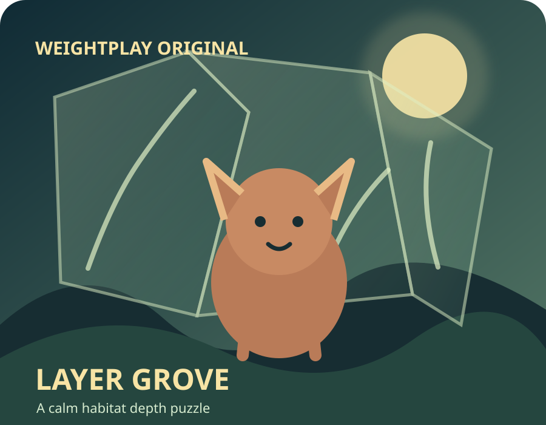

Settings

A calm habitat depth puzzle
Layer Grove
Stack three transparent habitat layers until the animal scene matches the keeper’s window.
Best moves: Not yet

Stack three transparent habitat layers until the animal scene matches the keeper’s window.
Best moves: Not yet
Compare the target window, then move three transparent habitat layers into the depth order that reveals the same animal scene.
Three grove scenes form one short session. Your best total moves is stored only in this browser when storage is available.
Read the target as a picture, not a timed task. Front layers cover the centre; back layers frame the scene.